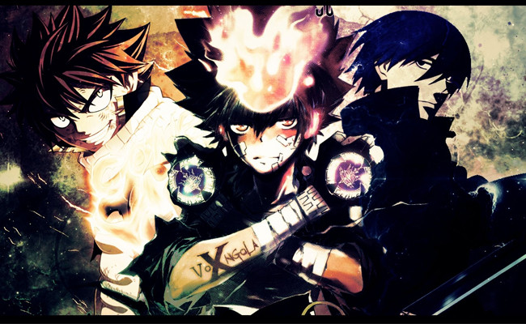
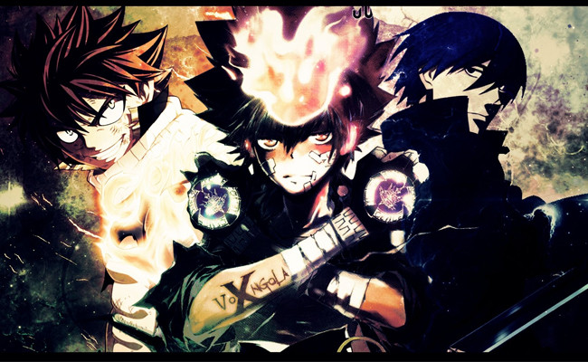

.jpg) 

anime
Anime adalah animasi dari Jepang yang digambar dengan tangan maupun menggunakan teknologi komputer. Kata anime merupakan singkatan dari "animation" dalam bahasa Inggris, yang merujuk pada semua jenis animasi.[1] Di luar Jepang, istilah ini digunakan secara spesifik untuk menyebutkan segala animasi yang diproduksi di Jepang.[2][3] Meskipun demikian, tidak menutup kemungkinan bahwa anime dapat diproduksi di luar Jepang.[4][5][6] Beberapa ahli berpendapat bahwa anime merupakan bentuk baru dari orientalisme.[7] Anime pertama yang mencapai kepopuleran yang luas adalah Astro Boy karya Ozamu Tezuka pada tahun 1963. Dewasa ini anime sudah sangat berkembang jika dibandingkan dengan anime zaman dulu. Dengan grafik yang sudah berkembang sampai alur cerita yang lebih menarik dan seru.[butuh rujukan] Masyarakat Jepang sangat antusias menonton anime dan membaca manga. Dari anak-anak sampai orang dewasa. Mereka menganggap anime itu bagian dari kehidupan mereka. Hal ini yang membuat beberapa televisi kabel menjadi terkenal akan beberapa film kartunnya, seperti Cartoon Network dan Nickelodeon yang mengekspor kartunnya. Sekarang anime menjadi sebuah bisnis yang menggiurkan bagi semua orang, dan banyak juga orang yang memanfaatkan hal ini untuk bertindak kejahatan. Pembuat anime disebut animator. Para animator bekerja disebuah studio untuk memproduksi sebuah anime. Di dalam studio itu, terdapat beberapa animator yang saling bekerja sama untuk menghasilkan sebuah anime yang berkualitas. Tapi sangat disayangkan, gaji dari para animator tersebut kecil jika dibandingkan dengan kerja keras mereka. Hal ini yang membuat para animator enggan untuk bekerja secara profesional. Mereka merasa hal itu tidak sebanding dengan usaha yang telah mereka lakukan. Para animator itu sering disebut "seniman bayangan". Karena mereka bekerja seperti seorang seniman yang berusaha mengedepankan unsur cerita dan unsur intrinsiknya. Pembajakan juga mempersulit para animator untuk mendapatkan keuntungan penuh dari hasil kerja keras mereka, meski ternyata juga ada "gosip" yang mengatakan bahwa ada pihak produsen anime yang menyebarluaskan karya mereka di luar jalur perdagangan resmi (mungkin gratisan atau dibajak) dengan tujuan untuk lebih memopulerkan hasil karya mereka. Tidak sedikit orang yang pergi ke Jepang untuk belajar mengenai pembuatan anime (dan manga tentunya) karena tertarik setelah melihat berbagai anime yang telah menyebar ke berbagai pelosok dunia di berbagai benua.[butuh rujukan] Ada juga pihak yang membuat hasil karya yang serupa atau bahkan mungkin meniru ciri anime, misalnya Korea dan beberapa negara Asia lainnya. Teknologi CG (Computer Graphics), Teknologi Visual Komputer, dan sebagainya telah mempermudah pembuatan anime sekarang ini, karena itu ada yang menganggap bahwa kualitas artistiknya lebih rendah dibandingkan dengan anime masa lalu. Hanya saja perlu diperhatikan bahwa kualitas gambarnya pun sekarang ini lebih nikmat dilihat dan lebih mudah dimengerti karena gambarnya lebih proporsional dan warnanya lebih bagus, ditambah keberadaan teknologi HD.
devinisi dan penggunaan
Anime adalah salah satu format seni, namun disalahartikan sebagai genre.[8] Dalam bahasa Jepang, kata anime merujuk pada format animasi dari seluruh dunia.[1][9] Sementara pada bahasa Inggris, anime berarti "animasi bergaya Jepang" atau "animasi yang diproduksi di Jepang".sss Kata anime tampil dalam bentuk tulisan dalam tiga karakter katakana a, ni, me yang merupakan bahasa serapan dari bahasa Inggris "Animation" dan diucapkan sebagai "Anime-shon"
lihat pula
Daftar istilah anime dan manga
Ikonografi manga – Cara penggambaran dan lambang-lambang dalam manga
Daftar anime
- Omake
- OVA
- OVAp
- hentai
- Manga
- Cosplay
- Ecchi
- Otaku
- Dorama
- J-Music
- Tokusatsu
- Galge
- Kartun